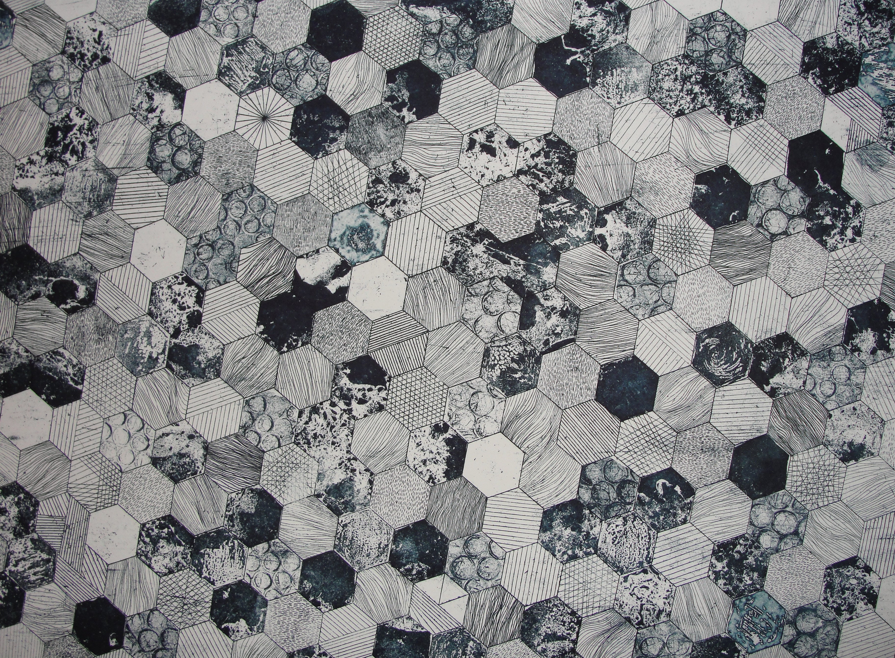

Cosa facciamo

I nostri programmi accademici supportano professionisti creativi che lottano per un mondo che sia più luminoso, più inclusivo, inesorabilmente innovativo ed ecologicamente resistente.
Sviluppa le capacità per immaginare e creare nuovi tipi di oggetti, immagini, sistemi e interazioni che contribuiscono in modo significativo al nostro mondo.
Collega la speculazione teorica e l'innovazione dei materiali con metodi di progettazione sperimentale nei nostri quattro programmi accademici e cinque laboratori di ricerca.
Trova la tua voce, identifica il tuo pubblico e lascia il segno nei vasti mondi dell'arte contemporanea, dell'artigianato e dei media digitali.
Con un alto livello di sovrapposizione tra le discipline, gli studenti utilizzano studi e negozi per collaborare con amici di altri programmi e portare i propri progetti in direzioni inaspettate. Dai un'occhiata ad alcuni dei nostri spazi preferiti per il lavoro interdisciplinare di seguito.
Lo strumento o il materiale giusto è spesso esattamente ciò di cui hai bisogno per ottenere una svolta. I nostri spazi creativi, supervisionati da esperti manager di studio, supportano il tuo lavoro nell'artigianato tradizionale, nella fabbricazione digitale e nell'ibrido pratiche.
Scuola d'Arte + Design
143 Art and Design Building
408 E. Peabody Drive
Champaign, IL 61752
217-333-0866